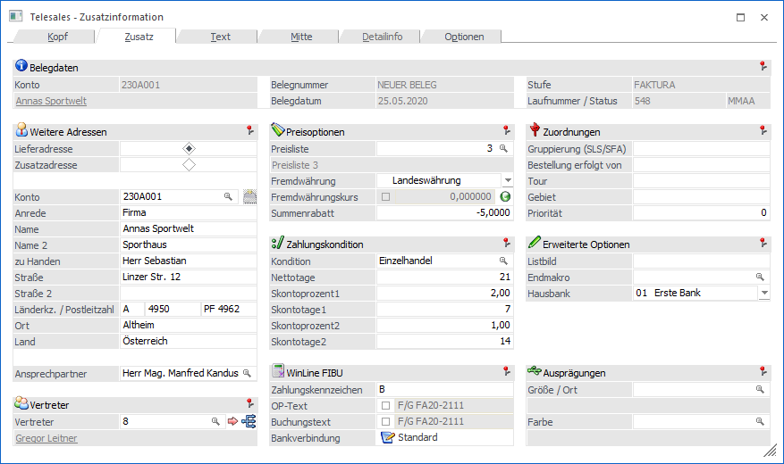
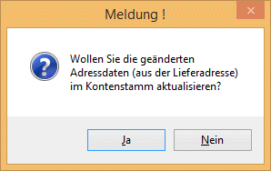
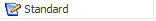
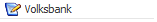

Wählen Sie das Fenster Zusatz in der Belegerfassung an, um zusätzliche Informationen einzugeben.

Es stehen Ihnen folgende Eingabefelder zur Verfügung
Ø Lieferadresse
Die Lieferadresse wird automatisch mit der Fakturenadresse vorbesetzt, diese kann aber jederzeit durch Eingabe der Nummer der Lieferadresse überschrieben werden. Haben Sie die Lieferadresse nicht angelegt, überspringen Sie dieses Feld mit TAB oder RETURN und erfassen Sie die Lieferadresse manuell.
Ø Adressdaten aktualisieren
Durch Drücken dieses Buttons (und entsprechender Bestätigung der "Sicherheitsabfrage") können die Adressdaten des angegebenen Personenkontos in den Personenkontenstamm übergeben werden.

Bei der Übergabe an den Stammdatensatz werden folgende Werte aktualisiert:
ü Anrede
ü zu Handen
ü Straße
ü Straße 2
ü Landeskennzeichen
ü PLZ
ü PLZ2
ü Ort
ü Land
Damit der Button "Adressdaten aktualisieren" zur Verfügung steht, muss dieser in der Fakt-Parametern aktiviert werden.
Ø Vertreter
Die Vertreterabrechnung kann auf Basis von…
ü Einzelnen Vertretern
ü Fixen Vertretergruppen und
ü Dynamischen Vertretergruppen (temporäre Gruppen)
… erfolgen.
Bei Einzelvertretern wird ein Vertreter im Belegkopf eingetragen. Üblicherweise ist dieser Vertreter fix mit dem Kunden verbunden und wird bei der Belegbearbeitung bereits vorgeschlagen. Der Provisionscode kann pro Belegzeile variiert werden.
Wird ein Vertreter bei der Belegerfassung verwendet, der bereits auf inaktiv gesetzt ist (dies kann durch die automatische Vorbelegung des Vertreters aus dem Personenkontenstamm geschehen), erfolgt beim Speichern des Beleges eine entsprechende Meldung, und der Beleg kann nicht gespeichert werden.
Bei Vertretergruppen wird ein Kunde von einer fix definierten Gruppe von Vertretern bearbeitet. Die Zusammensetzung der Gruppe bleibt immer konstant. Die Vertretergruppe definiert entweder die Provisionsbasis für die individuellen Vertreter oder sie definiert den Gesamtprovisionsbetrag der Vertretergruppe (Nähere Informationen entnehmen Sie bitte dem WinLine FAKT1 - Handbuch Kapitel Exkurs Grundlagen der Provisionsberechnung). Die Anlage der Vertretergruppe wird im Vertreterstamm durchgeführt.
Beispiel
Jeder Vertreter ist einem Vertriebsleiter zugeordnet. D.h. ein Vertriebsleiter und ein Vertreter bilden immer eine Gruppe, wobei der Vertriebsleiter natürlich mehreren Gruppen angehören kann.
Bei dynamischen Vertretergruppen werden Kunden von wechselnden Vertreterteams bearbeitet. Die Teams werden von Auftrag zu Auftrag neu gebildet. Die dynamische Vertretergruppe definiert entweder die Provisionsbasis für die individuellen Vertreter oder sie definiert den Gesamtprovisionsbetrag der Vertretergruppe. Die Anlage der dynamischen Vertretergruppe wird im Zuge der Belegerfassung durchgeführt.
Ø Preisliste
Hier kann die im Personenkonto hinterlegte Preisliste noch übersteuert werden.
Ø Fremdwährungscode
Der Fremdwährungscode wird anhand der beim Kunden/Lieferanten hinterlegten Preisliste vorbesetzt und kann manuell verändert werden. Anhand des Codes erfolgt die Umrechnung der Fremdwährung in Landeswährung.
Durch Aktivierung der Checkbox wird der Kurs im Beleg festgeschrieben (d.h. bei der weiteren Bearbeitung wird nur dieser Kurs verwendet).
Wird die Checkbox nicht aktiviert, wird der aktuelle Kurs in den Beleg geladen. (Ausgenommen Lieferantenfakturen die bereits in der Stufe Lieferantenlieferschein gedruckt wurden) Der Kurs wird in der FW- Historie gesucht; falls dort kein passender vorhanden ist, wird der Kurs aus dem FW- Stamm (= aktuellster Kurs) verwendet. Der Kurs wird auch bei Änderung des Belegdatums aktualisiert. Dies gilt auch für den automatischen Belegdruck.
Durch einen Klick auf die Grafik neben der Checkbox wird die Fremdwährungshistorie geöffnet. Ein hier ausgewählter Kurs kann durch Doppelklick in den Beleg übernommen werden.
Ø Summenrabatt%
Tragen Sie einen Summenrabatt-Prozentsatz (negative Eingabe) oder Zuschlag (positive Eingabe) ein.
Ø Zahlungskondition
Wählen Sie aus den definierten Zahlungskonditionenzeilen eine aus. Die Felder Skontoprozent 1 und 2, Skontotage 1 und 2 sowie Nettotage werden automatisch befüllt.
Ø Zahlungskennz.
Hier wird das Zahlungskennzeichen, das im Personenkontenstamm im Register FIBU hinterlegt wurde, angezeigt und kann manuell verändert werden. Das Zahlungskennzeichen wird auch automatisch in die WinLine FIBU übergeben, damit Selektionen im Zahlungsverkehr nach diesem Zahlungskennzeichen möglich sind.
Ø OP-Text
Hier wird der OP-Text angezeigt, der in die Finanzbuchhaltung übergeben wird. Bei den Stufen Angebot bis Lieferschein steht als Vorschlag "F/G Rechnungsnummer" in der Stufe Faktura "F/G + die nächste hochgezählte Rechnungsnummer". Diese kann sich beim Druck noch ändern, wenn z.B. in der Zwischenzeit auf einem anderen Arbeitsplatz ebenfalls eine Faktura gedruckt wurde, und die vorgeschlagene OP-Nummer damit bereits vergeben wurde.
Wir die Checkbox aktiviert, so kann der vorgeschlagene OP-Text editiert werden. In der Belegart kann zusätzlich noch hinterlegt werden, dass als OP-Text der Inhalt eines bestimmten Zusatzfeldes aus dem Kontenstamm vorgeschlagen wird.
Ø Buchungstext
Hier wird der Buchungstext angezeigt, welcher in die Finanzbuchhaltung übergeben wird. Bei den Stufen Angebot bis Lieferschein steht als Vorschlag "F/G Rechnungsnummer" und in der Stufe Faktura "F/G + die nächste hochgezählte Rechnungsnummer". Diese Vorgabe kann sich beim Druck des Belegs ändern, wenn z.B. in der Zwischenzeit auf einem anderen Arbeitsplatz ebenfalls eine Faktura gedruckt wurde und die vorgeschlagene Rechnungsnummer damit bereits vergeben wurde. In der Belegart kann abweichend dazu hinterlegt werden, dass als Buchungstext der Name des Rechnungsempfängers vorgeschlagen wird.
Wird die Checkbox aktiviert, so kann der vorgeschlagene Buchungstext editiert werden. Sofern der OP-Text keine eigene "Option" lt. Belegart hat bzw. durch Hinterlegung eines eigenen Textes im Feld "OP-Text" befüllt ist, wird der Buchungstext auch als OP-Text herangezogen.
Ø Bankverbindung
Wird ein Beleg erfasst, so wird die Standardbankverbindung aus dem Personenkontenstamm in den OP geschrieben. Über den Button "Bankverbindung" kann dem Offenen Posten eine "andere" Bankverbindung aus dem jeweiligen Personenkontenstamm zugewiesen werden. Durch Drücken des Buttons öffnet sich das Fenster, aus dem die weiteren Bankverbindungen gewählt werden können. Die Beschreibung der Bankverbindung wird anschließend als Button-Text angezeigt:


Der Andruck der gewählten Bankverbindung auf den Belegformularen kann mittels Variablen aus der Tabelle 288 (Bankverbindungen) erfolgen.
Ø Gruppierung (SLS/SFA)
In diesem Feld kann ein 10stelliger alphanumerischer Text als Kennzeichen für die Gruppierung bei der Sammellieferschein- und Sammelfakturenerstellung eingegeben werden. Dieses Feld steht auch in Belegvorlagen zur Verfügung, d.h. ein Wert kann über Batchbeleg exportiert und importiert werden. Im Fenster "Sammelfakturen" kann das Kennzeichen als Gruppierungs-Merkmal verwendet werden.
Beispiel
Es liegen verschiedene Lieferscheine für den gleichen Kunden, aber mit unterschiedlichen Bankverbindungen in den Belegen, vor. Beim Erzeugen von Sammelfakturen sollen die Lieferscheine nach der Bankverbindung zuerst gruppiert werden und dann nach anderen Kriterien wie Lieferscheinnummer, Projektnummer, usw. sortiert werden. Zu diesem Zweck wird daher die gewählte Bankverbindung über eine Belegkopfformel beim Speichern des Lieferscheins ins Feld "Gruppierung für SF" geschrieben.
Hinweis
Groß-/Kleinschreibung-Erkennung ist für das Kennzeichen aktiv. Die WinLine unterscheidet beispielsweise zwischen einer Eingabe von "k1" und einer von "K1".
Ø Bestellung erfolgte durch
Das ist ein reines Informationsfeld und greift auf keinerlei Stammdaten zu. Eine Eingabe kann aber auf Belegen angedruckt werden.
Ø Tour/Gebiet
Hier können Sie eine Tour und das Gebiet hinterlegen.
Ø Priorität
Hier kann eine max. 5stellige Priorität eingegeben werden, mit der der Kunde beliefert werden soll.
Ø Listbild
Wechseln Sie das Standardlistbild, indem Sie abweichende Zeichen eintragen.
Beispiel:
Das Standardlistbild der Faktura ist P02W44. Wollen Sie die amerikanische Variante mit Namen P02W44US wählen, geben Sie US ein. Alternative Listbilder können von Ihrem MESONIC-Betreuer erstellt werden.
Ø Endmakro
Eingabe bzw. automatischer Abruf der Makrofunktion aus der Belegart (Belegendmakro). Durch Drücken der F9-Taste kann nach allen bereits angelegten Makros gesucht werden.
Ø Hausbank
An dieser Stelle besteht die Möglichkeit eine Hausbank einzugeben, diese kann in der Belegart vorbelegt werden. In weiterer Folge können die zugehörigen Bankdaten auch im Formular angedruckt werden. Die Anlage von Hausbanken wird im Bankenstamm in der Applikation FIBU vorgenommen.
Ø Vorbesetzung Ausprägungen
Dieser Felder können nur dann bearbeitet werden, wenn Artikel mit Ausprägungen (Größen, Farben, Mehrlager) verwendet werden. Abhängig vom Kunden/Lieferanten kann hier eine Vorbesetzung der Ausprägungen vorgenommen werden, die bei der Artikelerfassung verwendet werden, soll. Dadurch kann gesteuert werden, dass z.B. der Kunde X seine Artikel immer nur aus dem Lager "Wien" bekommen soll.
Durch die Funktion "immer ausprägen" in der Belegmitte wird die Vorbelegung außer Kraft gesetzt. D.h. ist die Option "immer ausprägen" aktiviert, so wird das Aufteilungsfenster immer geöffnet.